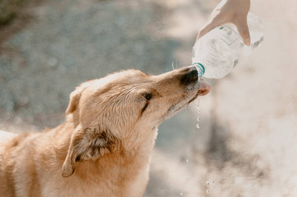

15 Mayo 2026
Cómo cuidar a tu perro en verano
Consejos para mantener hidratado y saludable a tu perro durante días calurosos.
Leer más →
Durante el verano las altas temperaturas pueden ser peligrosas para tu perro. Asegúrate de que siempre tenga agua fresca disponible y evita los paseos en las horas de mayor calor (entre 12 pm y 4 pm).
Nunca dejes a tu mascota encerrada en el carro. El suelo caliente puede quemar sus patas, así que camina sobre pasto o superficies frescas. Si notas que jadea excesivamente, busca sombra de inmediato y moja su cuerpo con agua tibia.
Consulta con tu veterinario si tu perro es de raza braquicéfala (Bulldog, Pug, etc.), ya que son más propensos al golpe de calor.